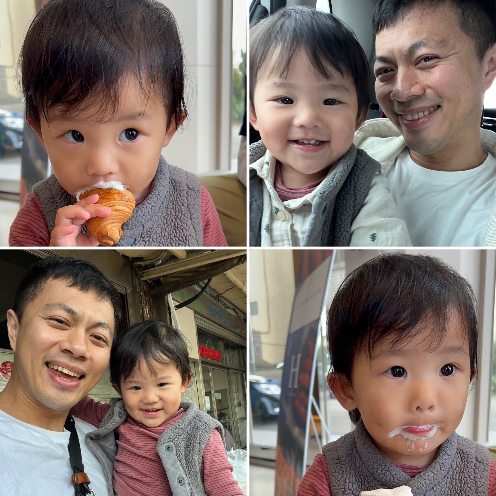
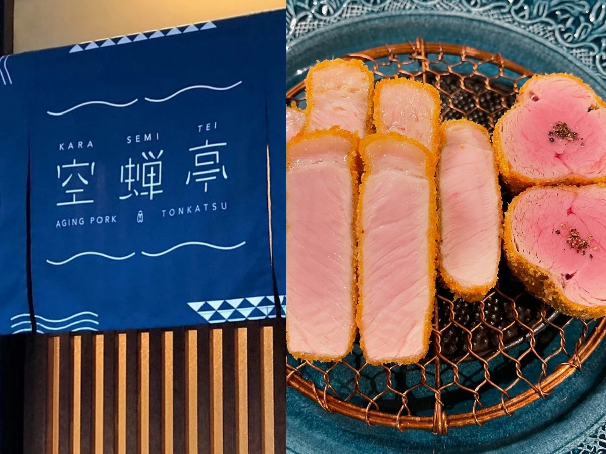
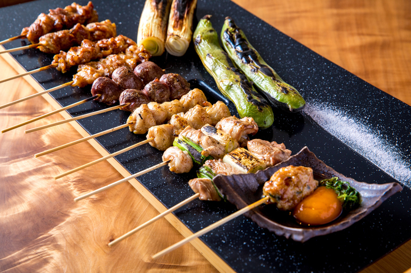
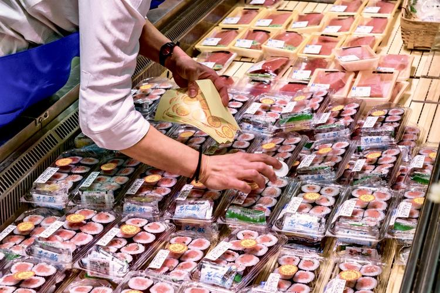

D1
桃園 ➔ 大阪
4/28 (週二) · 安頓與補給
D2
海遊館與招待大餐
4/29 (週三) · 昭和之日 (假日)

VIP 貴賓
Jack 叔叔同行！
今天負責陪玩、搬戰利品 💪
D3
勇闖環球影城
4/30 (週四) · USJ 體力戰
D4
大阪 ➔ 京都
5/01 (週五) · 黑門市場與移動
D5
和服與極品炸豬排
5/02 (週六) · 拍照與美食日

KLOOK 預訂確認
10:30 京都着物レンタル MOCOMOCO 清水寺本店
👗 女士和服(含髮型/配飾) + 👦 兒童和服(75-145cm)
預訂方案注意事項：
- 請務必於預約時間 10:30 準時抵達，遲到可能需要重新排隊或影響換裝順序。
- 方案已包含精美髮型與配飾，但不含化妝服務，建議媽媽自行完妝後再前往。
- 理悠的兒童和服限身高範圍為 75cm-145cm。
- 請留意店家規定的最晚歸還時間（通常為當日傍晚前），避免產生超時費用。
- 店家通常提供免費寄放換下的隨身衣物及隨身包包，但大型行李箱可能需另外收費，建議不要帶大行李前往。

TableCheck 預訂完畢
13:00 午餐：空蟬亭 Karasemitei
👤 已確定預約：3名 | 已付押金 ¥15,000
此趟大重點！極品熟成炸豬排。預約已搞定，直接入座享受美食。
餐廳地圖
15:00 回飯店睡午覺
穿和服很累，全家務必回房睡 1.5 小時。

17:30 晚餐：祇園串燒
睡飽後在飯店周邊找一間居酒屋大啖串烤。
今晚住宿：&zen Kyoto Gion
導航
D6
和牛燒肉與壽喜燒
5/03 (週日) · 祇園慢活與大餐
D7
京都 ➔ 臨空城
5/04 (週一) · 最終爆買與別墅派對
D8
滿載而歸 ➔ 桃園
5/05 (週二) · 回家囉

09:30 早餐：悠哉清冰箱
把昨晚超市買的豐盛食材當早餐清空。
10:00 出發前往機場
搭計程車只需 6 分鐘即可抵達關西機場。
14:15 抵達台灣
12:20 航班起飛，帶著滿滿回憶降落桃園！
每日神救援備案清單
小孩斷電、下雨、大排長龍？打開這裡就對了！